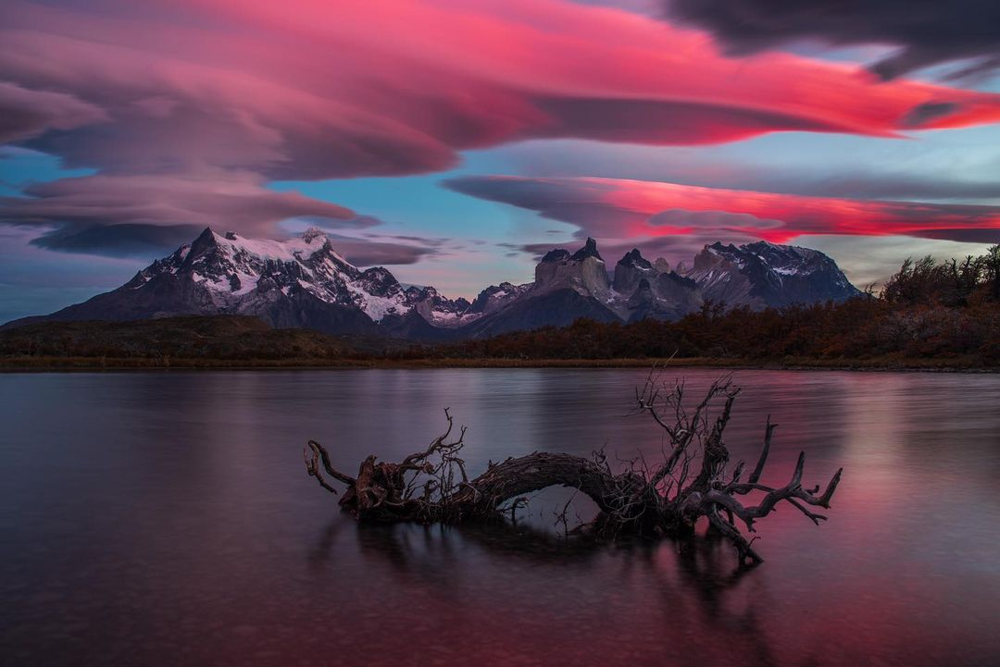
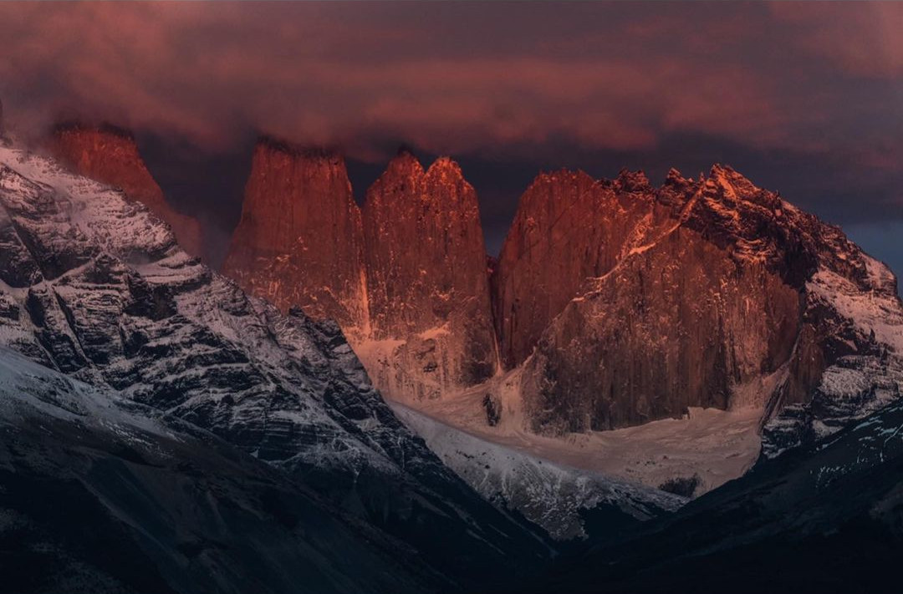
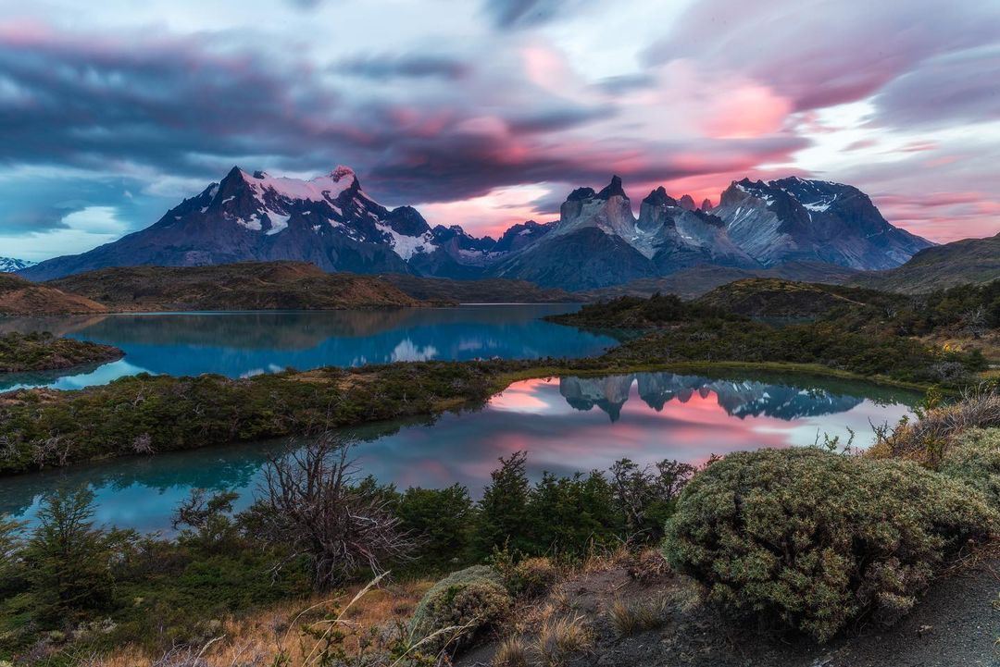
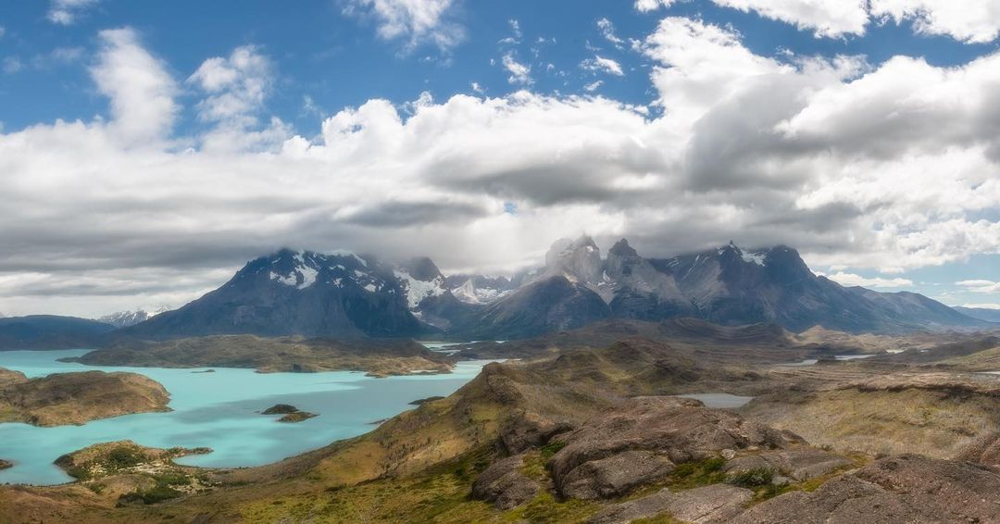
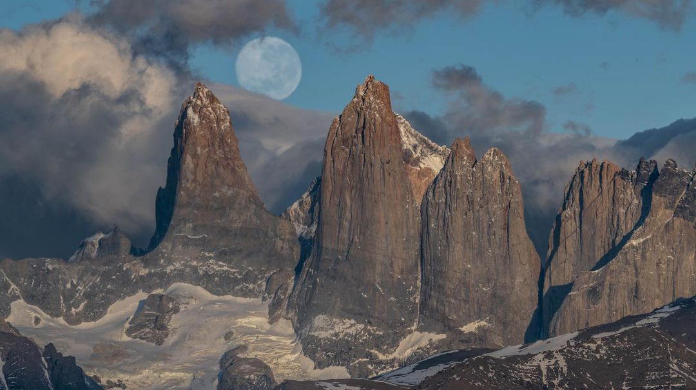

Recuerdos del otoño pasado. Una mañana cruda con colores únicos, en las cercanías de un estanque de reflejos en el Parque Nacional Torres del Paine. La luz siempre recompensará a quienes se arriesgan y se esfuerzan.
Fotografía tomada con Nikon D850 + Nikon 24-120mm

Vivir cerca de las montañas siempre ha sido una necesidad básica en mi vida. Esa sensación de estar en casa, de armonía y tranquilidad. No importa en qué parte del mundo mire, siempre que las mire, deben estar allí.
Fotografía tomada con Nikon D850 + Nikon 24-120mm

Desde arriba, la vista se extiende más allá, caminando por el Paso de la Feria, un antiguo sendero que nos recuerda la belleza de Torres del Paine.
Fotografía tomada con Nikon D850 + Nikon 24-120mm

No importa cuántas veces te pares frente a las montañas... Cuando te llamen, simplemente ve y algo bueno sucederá.
Sin duda, hay lugares mágicos en la tierra, la Patagonia es sin duda uno de ellos.
Fotografía con Nikon D850 + Nikon 24-120mm

Las Torres, Parque Nacional Torres del Paine. Uno de los marcos más icónicos de la Patagonia. Con una media de 2600mts s.n.m., estas cumbres graníticas son visitadas cada año por miles de personas. La octava maravilla del mundo no por nada.
Fotografía tomada con Nikon D850 + Nikon 24-120mm